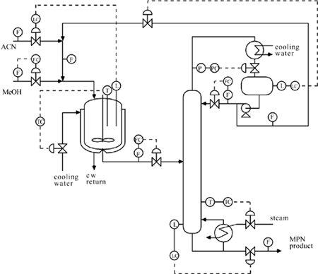
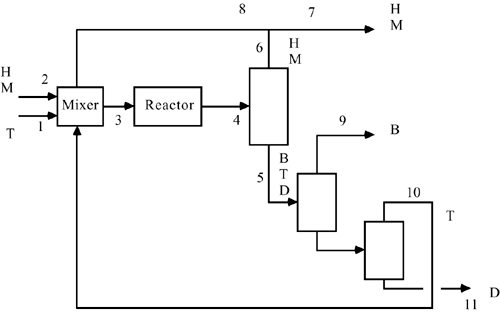

| 1: | Consider Example 15.1. Assume that the isothermal CSTR has perfect level control; that is, the volume is constant. The CSTR contains 200 moles, and the reaction rate constant is 0.6 hr-1. Verify the results shown in Figures 15-3, 15-4 and 15-5. |
| 2: | Consider Example 15.1. Revise Figure 15-7 to obtain the following alternative control strategy. Draw the control instrumentation diagram obtained by fixing the flow rate of stream 3 (between the CSTR and column) by using a flow controller on stream 3, and to control the CSTR volume by manipulating the fresh make-up (stream 1) flow rate. |
| 3: | Consider the MPN example. Alternative 2 is shown here. Now, consider the use of a reactor concentration sensor. Let the reactor concentration controller manipulate the methanol feed flow rate. Sketch this control strategy on the diagram. Which controller setpoint is set to yield a desired production rate?  |
| 4: | Consider the simplified flow sheet shown in Figure 15-22 (Example 15.5).
From material balances find the relationships for all flows as a function of hydrogen fraction in the purge stream and the single-pass toluene conversion in the reactor. Construct a table similar to Table 15-1. Based solely on the current raw material costs (neglecting capital and energy costs) of hydrogen and toluene, can a profit be obtained with a hydrogen purge concentration of 0.5 mole fraction?
|
| 5: | Consider the "back of the envelope" calculations for the HDA process (Example 15.5). In our first pass at material balances, we neglected the diphenyl formation. Now, consider the selectivity of conversion to toluene and include diphenyl material balances. The additional separator is shown in the flow sheet here.
Find how the raw material, recycle, and benzene product flows change as a function of toluene conversion, selectivity (fraction of toluene converted to benzene vs. overall conversion of toluene) and hydrogen purge fraction. Construct a table similar to Table 15-1. Based solely on the current raw material costs (neglecting capital and energy costs) of hydrogen and toluene, can a profit be obtained with a hydrogen purge concentration of 0.5 mole fraction and a selectivity of 0.95?
 |
| 6: | A Tennessee Eastman "challenge problem" was published by Downs and Vogel in 1993 (see the references section of this chapter). A fairly large number of academic studies have been performed on plantwide control problems. Conduct a literature review on this topic, read at least two articles, and compare the different control techniques proposed. |
| 7: | Most process plants have three steam header pressure levels, approximately 15 psig, 150 psig, and 600 psig. Discuss possible answers to the following:
What determines the pressure level needed for a particular unit operation? How would you control the pressure of each of the steam headers? How would you determine the cost of various levels of steam? If some low pressure steam were being released to the atmosphere to maintain the steam balance (and the low pressure header at 15 psig), what should be the incremental cost of this steam to give an economic reward using it for heating needs?
|